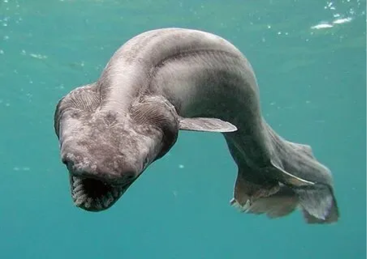

Животный мир
Марианской впадины
Марианской впадины
Глубоководный удильщик
Прозвище "удильщика" эта рыба получила за свой примечательный отросток на голове у самок. Эта удочка
действительно
выполняет роль поимки добычи: она снабжена специальной железой, которая заполнена биолюминисцентными
бактериями.
Удильщик приманивают жертву на этот свет, подвигая удочку к самой пасти. Таким образом, добыча как бы
сама заплывает в
рот рыбе.
Голотурия
Голотурии — родственницы морских звёзд и ежей. Современная фауна представлена 1150 видами, разделёнными
на 6 отрядов,
которые отличаются друг от друга формой щупалец и известкового кольца, а также наличием некоторых
внутренних органов.
Старейшие окаменелости голотурий относятся к силурийскому периоду.
Мегалодикопия
Длина тела составляет около 13 см.
Имеют способность восстанавливаться из маленькой части тела.
Являются гермафродитами.
Из-за сложной доступности и глубоководной среды обитания мегалодикопии являются малоизученными
организмами
Гренадёр
Гренадёр – выходец из отряда тресковых. К слову, это самый многочисленный представитель глубоководных
рыб, который
отличается впечатляющим разнообразием видов. Взрослый гренадёр имеет длину порядка 100 см, а массу –
около 3 кг. Гренадёр обладает длинным хвостом, который постепенно сужается.
Гигантские Бокоплавы
Отряд высших раков из надотряда Peracarida. Известно около 9000 видов, распространённых в бентосе морей и
пресных
водоёмах всего мира; некоторые представители ведут амфибиотический образ жизни в полосе прибоя и
заболоченных почвах. В
отряде описаны немногочисленные паразитические формы, такие как китовые вши (семейство Cyamidae).
Представители
подотряда Hyperiidea и байкальские Macrohectopus branickii (инфраотряд Gammarida) — планктонные
организмы.
Глубоководный морской слизень
Вид глубоководных лучепёрых рыб из семейства липаровых (Liparidae).
Вид был впервые классифицирован лишь в 1955 году советским ихтиологом А. П. Андрияшевым
До 2014 года Pseudoliparis amblystomopsis считался самой глубоководной рыбой из известных науке, хотя
экземпляры вида
Abyssobrotula galatheae в 1970 году были обнаружены на глубине более 8 км. На такой же глубине удалось
поймать и
экземпляры рода Bassogigas.
Рыба-гадюка
Этого обитателя Марианской впадины и других глубинных участков можно встретить крайне редко. Из-за
труднодоступной среды
обитания и образа жизни, ученые были неспособны определить точную численность этой разновидности.
Считается, что
рыба-гадюка (viperfish) может жить на глубине в течение 30 — 40 лет. В неволе же у нее более короткая
продолжительность
жизни – всего несколько часов.
Длиннорогий саблезуб
Взрослые особи обитают на глубине 500—5000 м, тогда как мальки — вблизи от поверхности воды. Взрослые
особи питаются
ракообразными, мелкими рыбками и кальмарами. В то же время молодь длиннорогого саблезуба является пищей
более крупных
хищников, таких как тунцы и алепизавры.
Латимерия
Одно из живых ископаемых. Латимерию часто называют целакантом. Но настоящие целаканты вымерли 145 млн лет
назад, а латимерии живут до сих пор. В
сравнении с латимериями целаканты были меньше и имели более вытянутые головы. Вырастали приблизительно до
90 см.
Маленькие плавники свидетельствуют о том, что целаканты были активными пелагическими хищниками.

Плащеносная акула
Реликтовый вид хрящевых рыб из рода плащеносных акул одноимённого семейства. Обитает в Атлантическом и
Тихом океанах. Из-за наличия примитивных черт плащеносную акулу называют «живым ископаемым». Максимальная
зафиксированная длина 2 м.
Окраска тёмно-коричневого цвета.
Акула-домовой
Глубоководная акула во многих источниках интернета упоминается как акула-гоблин.Своё название получила за
причудливую внешность: рыло этой акулы заканчивается длинным клювовидным выростом, а длинные
челюсти могут далеко выдвигаться. Окраска также необычна: близка к розовой (кровеносные сосуды
просвечивают сквозь
полупрозрачную кожу). Крупнейшая известная особь достигала длины 3,8 метра и весила 210 кг.
Крылатка
Вид лучепёрых рыб семейства скорпеновых. Максимальная длина тела 45,7 см. Это хищные рыбы. Крылатка имеет
длинные ленты спинных и грудных плавников — в этих роскошных веерообразных плавниках таятся острые
ядовитые иглы. Укол колючками этой рыбы очень болезнен. За резкой болью следует ухудшение состояния,
которое
заканчивается параличом скелетной и дыхательной мускулатуры, что в итоге может вызвать смерть.
Пеликановидный большерот
Вид глубоководных морских лучепёрых рыб из подотряда мешкоротовидных отряда угреобразных. Длина тела по
различным источникам варьируются от 60 до 180 см. Масса не более 1 кг. Длина пасти составляет около 1/3
от общей длины тела, остальная часть — это тонкое
угреобразное тело (на фоне огромной пасти, тело выглядит чрезвычайно малым), переходящее в хвостовую
нить, на конце которой располагается фотофор. У живых рыб он светится розовым или красным.

Малоротая макропинна
Вид глубоководных лучепёрых рыб. У них прозрачная голова, сквозь которую они могут видеть своими
трубчатыми глазами. Голова, сквозь
которую рыба следит за добычей, помогает защитить глаза.Обитает на весьма большой глубине, поэтому мало
изучена.
Полагалось, что она должна испытывать очень большие трудности ввиду того, что она видит только вверх.
Только в 2009 году
было полностью изучено строение глаза данной рыбы. По всей видимости, при попытках изучить её ранее рыба
просто не
переносила изменения давления.

Рыба-капля
глубоководная донная морская рыба семейства психролютовые, которую часто называют одной из самых
причудливых океанских
глубоководных рыб на планете. Предположительно обитает на глубинах 600—1200 м, в последнее время стали
всё чаще доставать на поверхность рыбаки.
Обычно длина рыбы не превышает 30 см, а масса тела порядка 2 кг. На передней части головы находится
отросток, похожий на нос, по бокам от которого располагаются два глаза.
Межорбитальное пространство шире, чем диаметр глаза.
Оседакс
Род многощетинковых червей из семейства сибоглинид. Название рода по-латыни означает «пожиратель костей».
Все известные виды данного рода обитают на дне моря на скелетах
китовruen, из которых извлекают питательные вещества с помощью симбиотических бактерий. В связи с
необычным образом
жизни этих червей часто называют «червями-зомби» (англ. zombie worms).
Гримпотевтис
Род глубоководных осьминогов из семейства Opisthoteuthidae. Они обитают на глубинах океана, и особи
некоторых видов были
обнаружены даже на глубине 7000 м, хотя обычно они обитают на глубине от 100 до 5000 м. Обычно в зрелом
возрасте эти
осьминоги достигают в длину 20 см, однако самый большой когда-либо зарегистрированный представитель этого
рода был в
длину около 180 см и весил около 6 кг.
Рыба-призрак
Рыба-призрак была впервые замечена учеными в июле 2016 года во время миссии на борту исследовательского
судна Okeanos
Explorer Национального управления океанических и атмосферных исследований (National Oceanic and
Atmospheric
Administration, NOAA).
Рыба-топорик
Вид глубоководных морских рыб из семейства Топориковые отряда стомиеобразных (Stomiiformes). Максимальная
длина тела до 9 см. Тело высокое, сжатое с боков. По бокам тела ниже боковой линии и на брюхе
располагаются фотофоры. Они излучают зеленоватый свет, который из-за
строения фотофоров направлен вниз, делая рыбу почти невидимой при взгляде снизу.
Светящаяся шарообразная медуза
Была обнаружена в 2016 году на глубине 4 км. Ученые предполагают, что она является хищником, судя по
строению ее щупалец. Существует теория, что желтые органы в ее голове выполняют репродуктивную функцию, а
красные - пищеварительную.
Акула-призрак
Глубоководная акула живет уже более 400 млн. лет. Также имеет название Химера в честь чудовища из
греческой мифологии, которое состояло из частей разных животных. Достигают длины 2 м. Рацион состоит из
донных беспозвоночных и мелких рыб. Тело химер сужается к заднему концу и заканчивается длинным (до
половины длины тела) бичевидным хвостом.